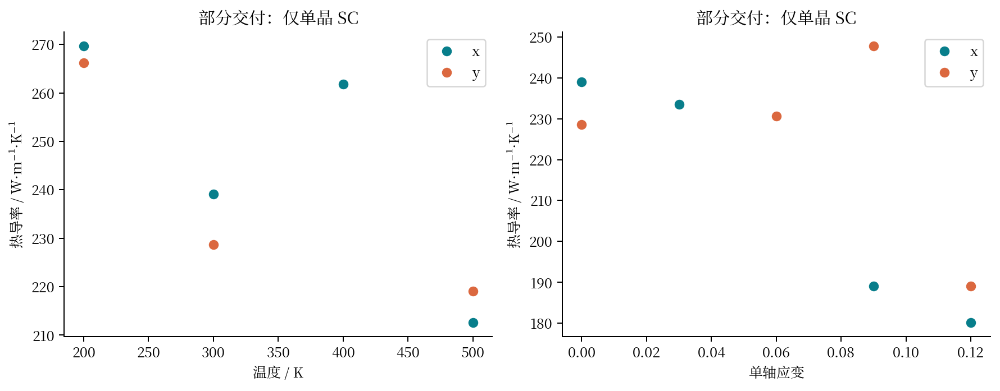
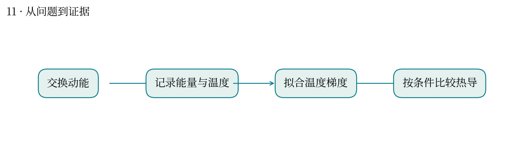
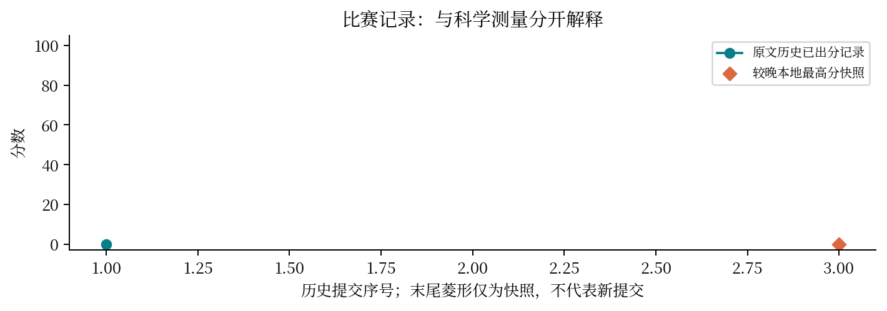

现实中想解决什么：石墨烯散热膜里晶粒大小不同，会不会影响把热铺开的速度？
从计算到应用：晶界影响能量传输 → 有效热导率 → 散热膜的温度分布。
这次实际做到哪一步：本题原本要比较晶粒条件，但保留分支仅有部分 SC 和短采样，未完成晶粒效应比较。
还缺什么：不能用这批数据推荐膜结构。需完整晶粒/方向对照、稳态、采样收敛，以及器件界面条件。
晶界会怎样阻碍石墨烯中的热流？
最高分快照：0.0 · 2026-10-12T01:11:24+08:00
RNEMD 通过交换动能制造热流，再从稳态温度梯度估算热导率。题目要求比较晶粒尺寸、温度与应变。
核对题面、partial-delivery 的 14 行 SC 汇总及重建 HANDOFF。题面要求 30 条条件、60 条方向运行、100 万步稳态与 200 万步采样；保留结果来自缩水且不完整的分支。
已保存汇总只有 SC，平均窗口 4 ps，不能支持完整晶粒效应。交接记录记载 18 个 SC 作业在 150 分钟超时：实际 SKU 约 22.7 步/秒，28 万步约需 205 分钟，连缩水计划也未完成。该交接记录由会话重建，证据强度低于原始调度日志。
预检与生产 SKU 不同导致耗时估计失准；原始产物仅放 /tmp，在重启后丢失；采样缩水、LAMMPS 版本改变、预弛豫及真空层调整都需披露。只有文件结构通过不代表完成了规定模拟。
可类比植物基因组比较中只拿到了一个物种的数据：分析流程完整，仍不足以回答跨物种问题。
平台 attempt 54890 标记最终 0 分且执行失败，但无可见执行日志。HANDOFF 明确本机分支未提交、交由另一机器；因此这些局部问题不能直接认定为最终提交的判零原因。应取回实际提交包、哈希及评审明细完成归因。



| attempt | 提交时间 | 分数 | 状态 |
|---|---|---|---|
| 54890 | 10-11 17:23:10 | 0.0 | 已出分 |
| 55852 | 10-11 19:37:36 | — | 排队中 |
源文件 SHA256 见 证据清单；用 scripts/build.py 重建图表。